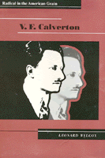

<body bgcolor="#FFFFFF" text="#000000" link="#0000FF" vlink="#CC0000" alink="#CC0000"><center><hr width="350" size="1" align="center" noshade>The passionate career of one of the Old Left's most influential spokesmen<hr width="350" size="1" align="center" noshade><p><a href="https://cdcshoppingcart.uchicago.edu/Cart/ChicagoBook.aspx?ISBN=9780877229292&&PRESS=temple" target="_top">Buy this book!</a> | <a href="https://cdcshoppingcart.uchicago.edu/Cart/Cart.aspx?PRESS=temple" target="_top">View Cart</a> | <a href="https://cdcshoppingcart.uchicago.edu/Cart/Cart.aspx?PRESS=temple" target="_top">Check Out</a></p><p></p></center><!--none//--><h1>V. F. Calverton</h1>
<H2>Radical in the American Grain</H2>
<h3>Leonard Wilcox</h3>
<P>cloth 0-87722-929-5 $54.95, Jun 92, <FONT COLOR=#990033>Out of Print</FONT>
<BR> 311 pp
6x9
</P><BLOCKQUOTE><I>"A decade before the birth of the </I>Partisan Review<I>, a circle of 'New York intellectuals' explored literature and culture with a radical eye and an independent spirit. As Leonard Wilcox's </I>V.F. Calverton: Radical in the American Grain<I> shows brilliantly, they were not only earlier; with Calverton himself in the lead, they remained the most universal-minded, the most politically courageous, and in many ways the best."</I>
<br>&#151<b>Paul Buhle</b>, Director of the Oral History of the American Left, New York University, and coeditor of <I>Encyclopedia of the American Left</I><I></I></BLOCKQUOTE>
<p>Leonard Wilcox's biography of V.F. Calverton and his <i>Modern Quarterly</I> traces the passionate career of one of the Old Left's most influential spokesmen and portrays the intense and turbulent intellectual milieu of the 1920s and 1930s. In this first full-length study of a much-neglected figure of the American Left, Wilcox contends that, as an editor and public intellectual, V.F. Calverton's role was crucial in setting the agenda for dialogue on the Left throughout those decades.
<p>Born George Goetz in 1900, Calverton was influenced early on by the Greenwich Village Left of the 1910s. Offering his home at 2110 East Pratt Street in Baltimore as a place to air literary, political, and artistic ideas, Calverton hosted such well-known figures as F. Scott Fitzgerald, Langston Hughes, A.J. Muste, Alain Locke, Scott Nearing, Max Eastman, and Norman Thomas. In 1923, he founded the <I>Modern Quarterly</I> and edited it until his death in 1940. The journal served as a major forum for intellectual debate and Marxist critique and was largely responsible for sustaining a distinctively American strain of independent radicalism through the Stalinist-dominated years of the 1930s.
<p>Wilcox also investigates the relation between the political and the personal, examining the connection between Calverton's chronic loneliness and profound fear of death and recurring themes of his radical thought such as his quest for community. <I>V.F. Calverton</I> rediscovers an important American intellectual leader whose search for a native radicalism enhances our understanding of the American Left between the wars.
<BR>&nbsp;<h2>Reviews</h2>
<p><I>"Leonard Wilcox's biography of V.F. Calverton fills a long-empty space in the history of American radicalism between the world wars. But more, it offers us the life of an independent radical exploring the interconnections between the political and the personal&#151between Marx and Freud. Given recent political transformations, this indigenous American radicalism may take on new and fresh meaning. Calverton may reemerge as a compelling figure and Wilcox's biography will be the place to begin."</I>
<br>&#151<b>Alexander Bloom</b>, Wheaton College, and author of <I>Prodigal Sons: New York Intellectuals and Their World</I>
<p><I>"This biography is the first major study of an extremely significant figure in the intellectual left of the 1930s. Wilcox makes a compelling case for Calverton's importance as a voice for an American independent radicalism and does a good job of placing his thoughts within the contexts of international Marxism in general and American leftwing theory in particular."</I>
<br>&#151<b>Casey Blake</b>, Indiana University, and author of <I>Beloved Community: The Cultural Criticism of Randolph Bourne, Van Wyck Brooks, Waldo Frank, and Lewis Mumford</I>
<BR>&nbsp;<h2>Contents</h2><P>
<p>Acknowledgments
<br>Introduction
<br>1. George Goetz: Baltimore Beginnings
<br>2. The Birth of V.F. Calverton and the Genesis of the <I>Modern Quarterly</I>
<br>3. Red Love and Lost Innocence, 1926-1928
<br>4. Karl Marx of the Sexual Revolution
<br>5. New York: Metropolitanism and Love
<br>6. The New Agenda: Literary Radicalism and the American Revolution
<br>7. The "Literary Rotary"
<br>8. Excommunication and Exorcism: Calverton and the Party
<br>9. The Americanization of Marx
<br>10. "Hellishly Hard Sledding"
<br>11. Marxism and Death: Calverton and the Old Left's Crisis of Reason
<br>12. The "Bankruptcy of Bolshevism"
<br>13. Where Angels Dared to Tread
<br>Epilogue
<br>Notes
<br>Index
</P><BR>&nbsp;<H2>About the Author(s)</H2>
<P><b>Leonard Wilcox</b> is Senior Lecturer in American Studies at the University of Canterbury in New Zealand.</P>
<BR><H2>Subject Categories</H2>
<p><A HREF="/tempress/american.html" TARGET="_top">American Studies</a>
<BR><A HREF="/tempress/biography.html" TARGET="_top">Biography/Memoir/Autobiography</a>
</p>
<BR><h2 class="inpageheading">In the series</H2>
<P><I><a href="http://www.temple.edu/tempress/critical.html" onMouseOver="window.status='Click for other books in this series!'; return true;" onMouseOut="window.status=''; return true;" target="_top">Critical Perspectives on the Past</a></i>, edited by <a href="http://www.temple.edu/tempress/authors/benson_memoriam.html" target="_top">Susan Porter Benson</a>, Stephen Brier, and Roy Rosenzweig.
</p><p><i>Critical Perspectives on the Past</i>, edited by Susan Porter Benson, Stephen Brier, and Roy Rosenzweig, is concerned with the traditional and nontraditional ways in which historical ideas are formed. In its attentiveness to issues of race, class, and gender and to the role of human agency in shaping events, the series is as critical of traditional historical method as content. Emphasizing that history is itself an interpretation of material events, the series demonstrates that the historian's choices of subject, narrative technique, and documentation are politically as well as intellectually constructed.</p>
<p align="center"><a href="https://cdcshoppingcart.uchicago.edu/Cart/ChicagoBook.aspx?ISBN=9780877229292&&PRESS=temple" target="_top">Buy this book!</a> | <a href="https://cdcshoppingcart.uchicago.edu/Cart/Cart.aspx?PRESS=temple" target="_top">View Cart</a> | <a href="https://cdcshoppingcart.uchicago.edu/Cart/Cart.aspx?PRESS=temple" target="_top">Check Out</a></p><p><font face="Arial" size="1"><a href="copyright.html" onMouseOver="window.status='Web Copyright Policy';return true;" onMouseOut="window.status=''" title="Web Copyright Policy">&copy;</a> 2015 <a href="http://www.temple.edu" target="new" onMouseOver="window.status='Link to Temple University home page';return true;" onMouseOut="window.status=''" title="Link to Temple University home page">Temple University</a>. All Rights Reserved. http://www.temple.edu/tempress/titles/817_reg.html</font></p>